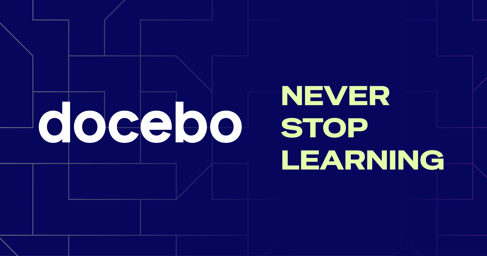

12 бесплатных шаблонов для онбординга клиентов, которые вам обязательно стоит попробовать

Обучение новых клиентов может быть сложным процессом. Вам необходимо использовать правильный подход, чтобы убедиться, что каждый новый клиент, присоединяющийся к вам, готов использовать ваш продукт и приносить доход. Здесь нет места для промедления или небрежности. Стандартизация процесса возможна, и именно здесь на помощь приходят шаблоны для обучения клиентов.
Правильные шаблоны для обучения клиентов могут принести огромную пользу. Интегрируясь в вашу рабочую среду, они позволяют вам предоставлять каждому клиенту необходимую поддержку, не создавая при этом чрезмерной нагрузки на ваши ресурсы. Чтобы этого достичь, вам необходимо понять их возможности и затем найти подходящие шаблоны, чтобы начать.
Отказ от ответственности: Информация ниже является актуальной на 17 апреля 2024 года.
Как шаблоны для обучения клиентов могут значительно улучшить ваш процесс обучения клиентов
Когда новые клиенты обращаются к вам впервые, у них возникнет множество вопросов. От логистики до выставления счетов и инструкций – эти вопросы могут быстро стать бременем для ваших ресурсов. Шаблоны помогают предоставлять им всю необходимую информацию более эффективно.
Не менее важно, что поиск подходящих шаблонов также означает, что вы можете расширить этот процесс на нескольких сотрудников. Вместо того, чтобы тратить значительное количество времени и внимания каждого члена команды каждого нового клиента, вы можете стандартизировать весь процесс, не теряя при этом персонализации и успеха.
Вы также можете сделать это не в одиночку. Вы можете найти бесплатные шаблоны для онбординга клиентов на каждом этапе процесса.
Например, ищете простой шаблон для проверки задач при онбординге? Это отличное место для начала. Как насчет анкеты или заявления о работе при онбординге? Конечно. Шаблоны для электронной почты так же возможны, как и повестки дня для первого звонка, опросы удовлетворенности клиентов и многое другое… Начните с этих 12 шаблонов для онбординга клиентов, чтобы начать работу.
1. Шаблон портала для онбординга клиентов (Dock)
Легко потерять ссылки, вложения, электронные таблицы и списки задач во время онбординга. Шаблон портала для онбординга клиентов от Dock Dock объединяет все ваши ресурсы для онбординга в одном удобном общем рабочем пространстве.
Использование портала для онбординга предоставляет вашим клиентам персонализированное руководство по успешному использованию вашего продукта и помогает вам оставаться в курсе следующих шагов — без необходимости использования инструментов управления проектами или беспорядочных электронных таблиц.
2. Шаблон для проверки задач при онбординге клиента (Zapier)
Ваш процесс онбординга, вероятно, включает в себя несколько четко определенных шагов. С помощью этого шаблона для проверки задач при онбординге клиентов, вы можете оптимизировать этот процесс в любое время. Он включает в себя шесть этапов:
- Приветствие
- Юридические вопросы
- Финансы
- Коммуникация
- Управление проектами
- Обмен файлами
Каждый из них содержит всего несколько задач, чтобы помочь вам выполнить то, что вам необходимо. Таким образом, вы никогда не теряете контроль над логистикой, которую необходимо организовать в каждой области процесса адаптации новых клиентов.
3. Опрос для адаптации новых клиентов (HubSpot)
Разумеется, ваш основной чек-лист – не единственный документ, который имеет решающее значение для начального процесса. Этот опрос для адаптации новых клиентов помогает вам убедиться, что вы получаете всю необходимую информацию, когда новый клиент готов начать сотрудничество с вами.
В опросе содержатся несколько важных разделов, в том числе:
- Основная информация о клиенте, включая контактное лицо
- Информация о маркетинге, чтобы лучше понять историю и цели бренда
- Информация, специфичная для проекта, чтобы понять, почему они выбрали вас, и чего они надеются получить от партнерства
- И многое другое
Это один из самых важных шаблонов адаптации клиентов, которые вы можете использовать, потому что он охватывает всю основную информацию, которая вам понадобится для некоторых других этапов адаптации ниже. Его конструкция позволяет легко и последовательно использовать его со всеми вашими клиентами.
4. Шаблон соглашения об оказании услуг (Rocketlane)
Договор (SOW) вероятно является одним из ключевых результатов, которые вам необходимо получить в процессе адаптации. Это юридически обязывающий документ, который точно определяет характер взаимоотношений и то, чего клиенты могут ожидать от своих денег и сотрудничества.
Эта шаблон договора (SOW) упрощает этот процесс. Быстро определив ключевую информацию и структуру проекта, вы сможете поддерживать новые отношения с клиентом на правильном пути, не создавая расширения области задач или отклоняясь от первоначальных требований.
5. Программа первого звонка с новым клиентом (MeetingNotes.com)
В какой-то момент, чтобы обеспечить успешное начало отношений с новым клиентом, вам потребуется встреча. Независимо от того, будет ли эта встреча виртуальной или личной, этот шаблон программы первого звонка может максимально увеличить ваши шансы на успех.
В программе вы можете сосредоточиться на ключевых темах, таких как:
- Определение успеха
- Переход от процесса продаж к реализации
- Представление ключевых участников с обеих сторон
- Определение потенциальных рисков, которые необходимо устранить или избежать
Также в ней есть раздел для конкретных следующих шагов, чтобы все участники партнерства знали, куда двигаться и что делать после встречи.
6. Шаблоны электронных писем для адаптации клиентов (Indeed)
Помимо встречи, вам необходимо поддерживать связь и проводить дополнительные действия. Эти письма приветствия являются отличным дополнением к вашему набору шаблонов для адаптации новых клиентов, поскольку они делают процесс простым и понятным.
В общей сложности, вы найдете 11 шаблонов, которые затрагивают несколько различных сценариев. От общего приветствия вашей компании до купонных кодов, представления руководителей компании и многое другое, вы обязательно найдете (и легко внедрите) шаблоны, которые наилучшим образом соответствуют вашей ситуации, потребностям и рабочему процессу.
7. Шаблоны писем для адаптации SaaS-приложений (Messaged)
Ищете более конкретные письма, которые напрямую обращаются к новым пользователям вашего решения SaaS? Воспользуйтесь этой всеобъемлющей библиотекой шаблонов писем для адаптации SaaS, которые станут неоценимым ресурсом для всей вашей команды продаж.
Вы найдете сотни шаблонов, которые уже разработаны, и ждут только вашего индивидуального текста и фирменного стиля. Это примеры того, как другие бренды SaaS используют письма, что позволяет вам быстро и эффективно создать приветственные письма, основанные на проверенных лучших практиках.
8. Шаблон передачи от отдела продаж к отделу клиентского успеха (Cognism)
В любом процессе адаптации новых клиентов, ваши заинтересованные стороны не ограничиваются только одним отделом. Вам необходимо получить поддержку и вовлеченность от вашей команды продаж и команды поддержки клиентов, чтобы обеспечить успешную адаптацию и улучшить удержание клиентов. Именно здесь может оказаться незаменимым этот шаблон передачи задач от отдела продаж в отдел поддержки клиентов.
Эта вариативность уникальна среди шаблонов адаптации новых клиентов, поскольку это больше похоже на руководство, чем на готовый документ. Это требует хотя бы некоторого взаимодействия с обеими сторонами заинтересованных сторон, чтобы правильно настроить шаблон. Но как только вы это сделаете, он может стать важной частью вашего процесса адаптации, чтобы обеспечить эффективное и плавное функционирование ваших рабочих процессов.
9. Новый шаблон опроса удовлетворенности клиентов (SurveyMonkey)
По мере того, как ваши новые клиенты проходят через процесс адаптации, измерение опыта клиентов становится все более ценным. Если вы сможете определить, насколько довольны ваши клиенты процессом и решением, вы сможете снизить отток клиентов и стратегически увеличить лояльность клиентов. Именно это могут помочь вам реализовать эти шаблоны опросов удовлетворенности клиентов от SurveyMonkey.
Шаблоны намеренно просты, фокусируясь только на метриках, специально разработанных для измерения потенциальной лояльности клиентов. В результате, вы всегда будете знать, какие новые клиенты довольны вами, а какие из них могут нуждаться в более персонализированном подходе.
10. План действий по адаптации новых клиентов для SaaS (UserPilot)
Оптимизация вашей работы начинается с поддержания контроля. Шаблон плана действий по адаптации новых клиентов создает этот контроль, обеспечивая, чтобы все участники проекта были в курсе именно тех шагов, которые необходимо предпринять каждый раз, когда присоединяется новый клиент.
Рассмотрите это как документ, который помогает вам создать этот график для новых клиентов. Вы можете прикрепить отдельные сценарии использования по мере необходимости или использовать другие, более конкретные шаблоны адаптации клиентов для тех частей процесса, которые требуют больше деталей.
11. Шаблон адаптации клиентов для автоматизации процессов (ClickUp)
Пришло время для более всестороннего подхода. Управление проектами является неотъемлемой частью процесса адаптации, и этот шаблон адаптации клиентов специально разработан для помощи в этом аспекте более крупной задачи.
Это простой обзор, в котором перечислены все задачи по адаптации, которые вам необходимо выполнить. Но помимо общего списка задач, он также включает в себя, кто несет ответственность и сроки выполнения каждой задачи, в зависимости от первоначального запуска. Вы также можете сделать задачи зависимыми друг от друга, чтобы автоматизировать процесс и максимально повысить эффективность.
12. Шаблон «Карта пути адаптации клиента» (Цифровая адаптация)
Наконец, никогда не недооценивайте силу возможности составить карту взаимоотношений с клиентами, когда они только начинают пользоваться вашим продуктом. Этот шаблон «Карта пути адаптации клиента поможет вам это сделать. Он отображает все точки контакта с вашей аудиторией, чтобы построить более прочные и долгосрочные отношения с клиентами.
Картирование пути клиента является ключевым для эффективного управления взаимоотношениями с клиентами (CRM). Здесь он помогает вам держать все под контролем, касающееся продаж, адаптации и обучения новых клиентов, чтобы максимально увеличить их шансы на успех и показатели удержания.
От шаблонов адаптации клиентов до комплексного опыта адаптации с помощью Docebo
Когда речь идет об адаптации, эффективное обучение клиентов является одной из самых важных потребностей для любого бизнеса. Эти шаблоны адаптации клиентов могут помочь, но вы также можете углубиться, используя систему управления обучением, разработанную для того, чтобы помочь вашим новым клиентам добиться успеха.
Создайте обучающие модели, которые необходимы вашим клиентам для достижения успеха. Свяжите их в более крупную обучающую сеть, которая легко понимается и на которой можно строить. Затем, разработайте интеграции LMS, чтобы интегрировать ваше обучение в более широкий процесс онбординга.
Готовы начать? Закажите демонстрацию Docebo уже сегодня. Позвольте нам показать вам, как наша платформа может максимизировать ваши шансы на успех при подготовке новых клиентов к долгосрочному успеху и удержанию.